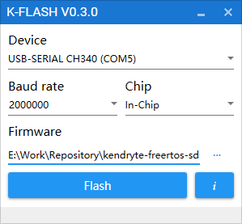

Update MaixPy firmware
1. Connecting hardware
Connect the Type C cable, one end to the development board, one end to the computer
2. Install the driver
The main reason is to install the serial port driver, because the board is connected to the computer through the USB to serial device. Install the driver according to the board's USB to serial port chip model.
Operate the serial port under
LinuxorMac. If you don't want to use thesudocommand every time, executesudo usermod -a -G dialout $(whoami)to add yourself to thedialoutuser group. May need to be logged off or restarted to take effect
2.1. For Dan Dock or Maix Bit
the CH340 used by the Dan_Dock development board: Linux does not need to install the driver. The system comes with it. You ls /dev/ttyUSB* can see the device number by using Windows. You can search and download the installation on the Internet, and then you can Device manager see the serial device in it.
2.2. For Maix Go
The development board uses a STM32 to implement the analog serial port and the JTAG function.
The firmware of this STM32 chip is factory defaulted to open-ec firmware. If there is no problem, one or two serial ports will appear, such as Linux Two serial ports /dev/ttyUSB0 and /dev/ttyUSB1 appear below. Please use /dev/ttyUSB1 when downloading and accessing the serial port. Windows is similar.
If you need to re-burn this firmware, you can download it from github or open-ec firmware, then use the STM32's SW pins (GND, SWDIO, SWCLK) from the ST-LINK connection board for programming. (The STM32 on the current version of the Go board does not support serial port burning. It can only be burned using ST-LINK. Please purchase it if you need it, or use a board with 'IO` simulation. Such as the Raspberry Pi))
In addition to open-ec and CMSIS-DAP firmware, compared to open-ec can simulate JTAG to debug the board, open-ec does not currently support emulation JTAG, can from Download the firmware on the official website, use ST-LINK to burn it, and `dev/ttyACM0 device will appear under Linux
ST-LINK has a very complete description of the burning method of
STM32, please search for yourself.
3. Get the upgrade tool
3.1. Ubuntu(Linux)
Download tool:kflash.py
sudo apt update
sudo apt install git python3 python3-pip
sudo pip3 install pyserial
git clone https://github.com/sipeed/kflash.py
3.2. Windows
K-Flash: Download from github
Or download from the official kendryte page
If it is the Maix Go development board, currently only the kflash.py script can be used for burning, so you need to install python3 on your computer.
Then download kflash.py
4. Get the firmware
Download from github page
Firmware endup with .bin or .kfpkg
5. Download the firmware to the development board
5.1. Linux
Use the following command to burn, you can use it python3 kflash.py --help to get help.
sudo python3 kflash.py -p /dev/ttyUSB0 -b 2000000 -B dan firmware.bin
- Which
-pis the specified device, you canls /dev/ttyUSB*view the device -bis specified baud rate, if the download fails, you can try again to reduce the baud rate-Bis specified board, without the support of the model do not worry, you can still download, but may need to download after Manual reset to start. WhereMaix Gouses-B goD(STM32has burnedCMSIS-DAPfirmware) or-B goE(STM32has burnedopen-ecfirmware)
Maix GoIf the confirmation option is correct and still cannot be downloaded, you can try to dial the three-phase dial button to the position ofDownand keep downloading again.

5.2. Windows
Run the downloaded software in two machines, select firmware, serial port, etc. after running, click to download

If the development board is Maix Go, you can only use kflash.py to download it. The download method is the same as the method on Linux, see above.